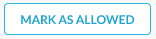

Behavior Analytics Incident Details
The Incident details page provides the summary, alert and events details, and context analysis. Admins will access this page to Acknowledge the violation. Admins must have a minimum of “View and Manage” privileges to acknowledge violations.
To access this page, click Incidents > Behavior Analytics > Incident Description name. The Summary tab is the default tab.
The fields that display will vary based on the policy that triggered the event. A policy triggers when a policy interval and threshold are met. The fields you see, such as email, source, location, device, etc. are attributes of the last event which met the conditions to trigger the policy. For example, if a policy is created to alert if a user downloads 100 files in five minutes, then the information displayed is for the 100th event that occurred within the five minutes.
The Summary tab shows:
Number of alerts for this incident.
Number of events for this incident.
Ability to scroll quickly through the list of incidents from the details page.

Status of the incident and ability to the alert.
Ability to allow / report false positives, click .
Application that triggered the policy.
Instance account name.
Email for the user that triggered the policy.
Device that triggered the policy.
Source Location for the user.
Policy name that was triggered. Admins can click the arrow icon to view the policy details.

Severity level of the incident.
The Event Timeline tab shows:
Ability to display the latest or earliest alerts and events for the particular incident.

Enter a query into the Filter field. This is a SkopeIT advanced search query. For details, click SkopeIT Query Language.
View the user's last 24-hour activity. This is the user associated with the incident. Click
 on the far-right side of the page.
on the far-right side of the page.Each alert and event are listed in sequential order (latest or earliest). Click the
 icon to view details. The Alert Details or Network Event Details side panel displays.
icon to view details. The Alert Details or Network Event Details side panel displays.
The Context Analysis tab displays contextual insights by looking into a user's 24-hour activities before the incident to provide more detail.
Additional indicators are listed in the right-hand panel.